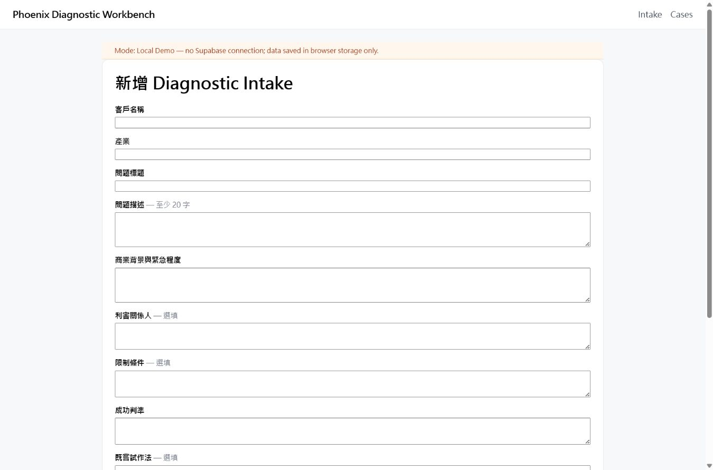
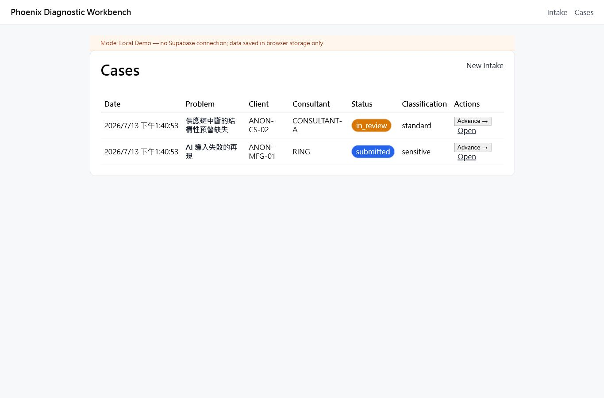
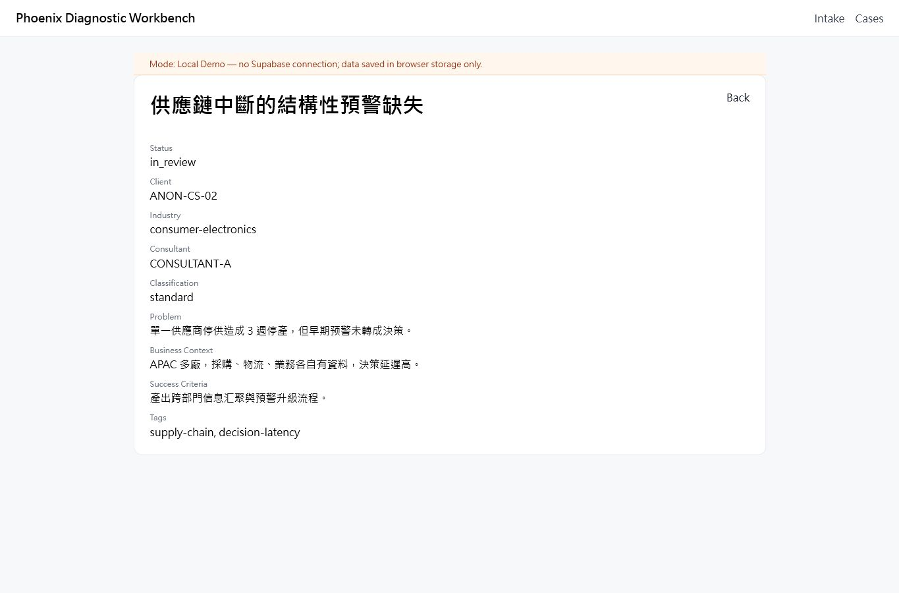

以下為診斷工作台實際 mock 模式的匿名畫面，不含真實客戶資料。完整操作、報告生成與知識回寫於預約 Demo 中展示。
由結構化表單界定問題、脈絡、利害關係人與成功判準。
以狀態、分類與顧問負責人整理案件，保留可追蹤的審閱路徑。
把問題、商業背景、成功判準與標籤收斂成顧問可審閱的基礎。



畫面擷取自實際可執行的本機 mock 模式；所有名稱均為匿名示範代碼。正式 Pilot 採受控帳號，不開放公開註冊。